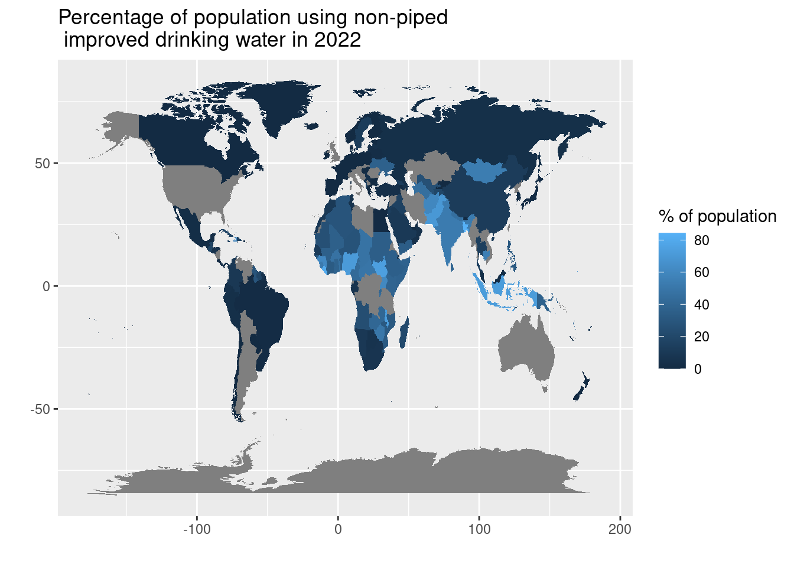
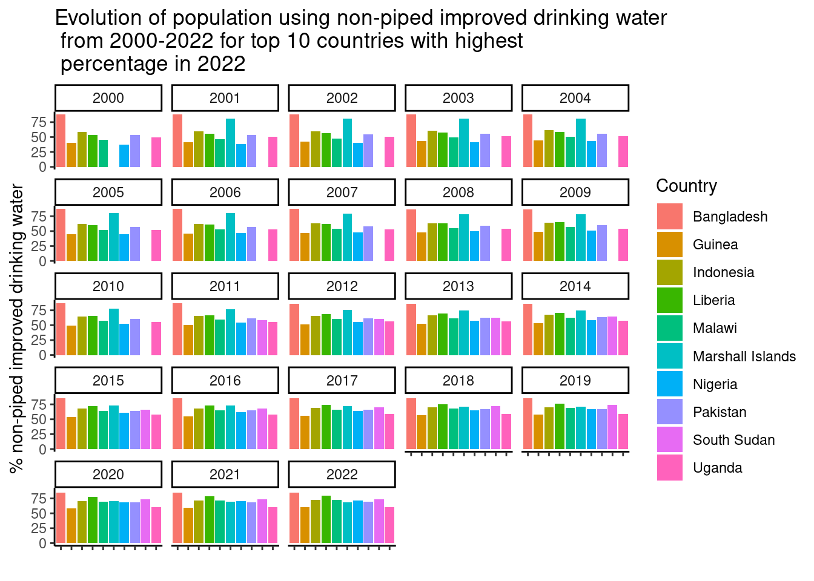
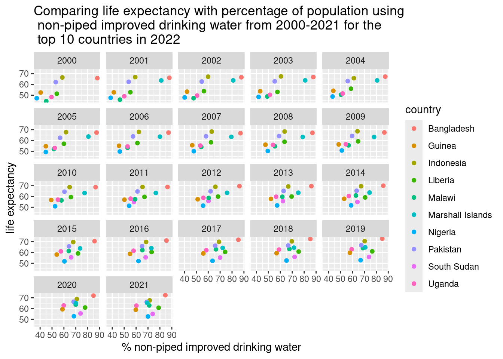

Mapping the proportion of population accessing non-piped improved drinking water
Displaying the impact of non-piped improved drinking water overtime, for the top 10 countries with the highest percentage of non-piped improved drinking water in 2022
Introduction
This report highlights UNICEF data and the important work they are achieving to improve water access to people in poor regions. Water is one of the world’s most important resources. It is paramount we limit the use, preserve water and respect the importance of water. Water is essential for everyday living, particularly in the third world where access to clean, safe water can be scarce. Water is a basic human need and it is imperative that all populations get increased access to clean water for health and hygiene purposes. Businesses must be sustainable and preserve their water usage through water stewardship.
Importance of natural resources
The availability of safe drinking water is not on tap like it is here in Ireland. In contrast there is an outcry when areas in Ireland are without water for one day due to maintenance works. Imagine, no drinking water and no toilet. This highlights what life must be like for people living in developing countries. The gains made by UNICEF to provide access to clean drinking water are tenuous. It is an ongoing investment. It needs to be maintained and observed. At the same time, outside forces pose a threat to reverse their progress. Drought and scarcity of water are caused by climate change. Communities are destroyed and supplies are disrupted by flooding. All ecosystems and human health are at risk from pollutants.The map displays the average percentage of the population using non-piped improved drinking water sources in 2022. It is low in developed countries as they have piped clean water.
Data analysis
It is important to analyse data overtime. Data could be shown to highlight if there are improvements in accessing non-piped improved drinking water especially in poorer countries who would not have access to piped water. The data is redefined in the analysis of the UNICEF data to display the top 10 countries with the highest population using non-piped improved drinking water in 2022. The bar chart displays the evolution of the population using non-piped improved drinking water over twenty-two years between 2000-2022 for the top 10 countries with the highest percentage in 2022. The bar chart highlights how populations in these countries have greater access to non-piped improved drinking water overtime. Bangladesh is an outlier as they have high access to non-piped improved water every year.

Life expectancy is improving over time due to the great work of UNICEF and other charities in third world countries. The increase in life expectancy is due to:
- improvements in healthcare,
- fresh water,
- food
- and improvements in education leading to increase in economic growth.
The times series chart displays how life expectancy improves in general over time in the ten countries selected with the highest percentage of non-piped improved drinking water in 2022. The advancements in fresh water sources such as wells greatly helps this.
It displays the life expectancy of the top 10 countries with the highest percentage using non-piped improved drinking water in 2022. It displays the improvement in life expectancy over the twenty-two years.
The scatter plot highlights life expectancy in relation to access to non-piped improved drinking water in the top 10 countries with the highest percentage in 2022 over the twenty-one years. There will be outliers in the data as developed countries are included in the data who have piped clean water. The scatter plot displays how life expectancy improves with advancements in clean water resources over the years. The most recent data available for life expectancy is for the year 2021, it displays the data over the past twenty one years.

Conclusion
As evident from the above data, implementing non-piped improved drinking water clearly increases life expectancy and consequently one would hope it would become more widespread in those developing countries that need it most.